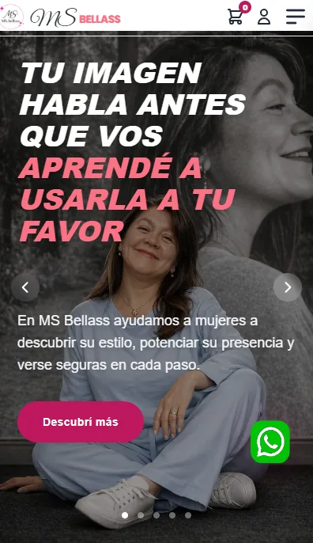
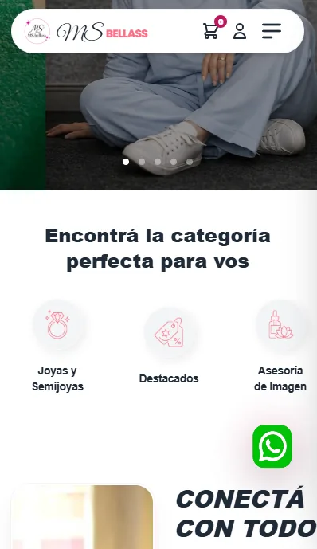
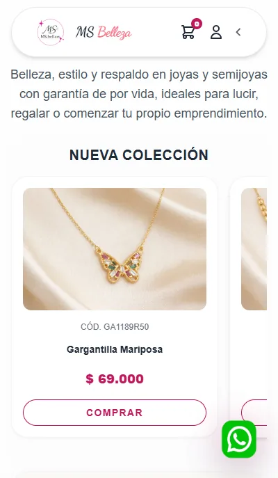
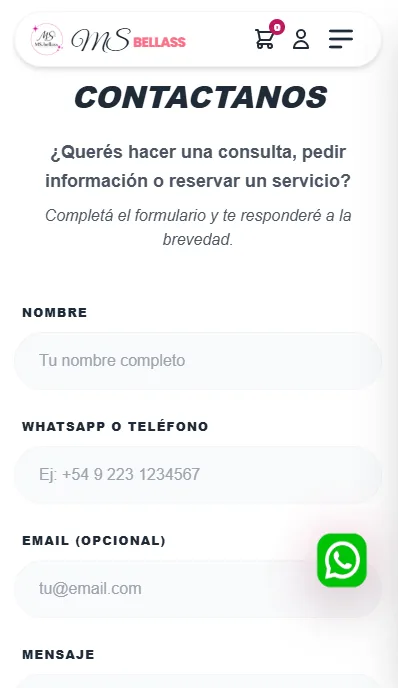

Ecommerce MS-Bellass
Plataforma integral de presencia digital que unifica la promoción de servicios profesionales con una tienda online de productos de belleza y catálogo dinámico.
Problema Resuelto
Dispersión de canales de atención y falta de catálogo dinámico unificado.
Solución de Ingeniería
Plataforma web con cotizador dinámico, tienda autoadministrable y cero suscripciones mensuales.
Impacto Operativo
Captación directa de clientes calificados y automatización del pasaje de cotizaciones a WhatsApp.
El Desafío & Objetivo
Diseñar y desplegar una web de marca personal que transmitiera la calidez y el profesionalismo de los servicios de asesoría de imagen, integrando a su vez un catálogo interactivo con carrito de compras para venta directa de productos de catálogo.
Arquitectura & Funcionalidades
-
Navegación Fluida con Menú Lateral: Acceso instantáneo a categorías de asesoría, talleres, maquillaje y catálogo de productos.
-
Tienda Integrada sin Fricciones: Carrito de compras reactivo en JavaScript nativo que sintetiza el pedido y lo envía formateado a WhatsApp.
-
Prueba Social & Testimonios: Bloques de reseñas reales para consolidar autoridad y confianza en la contratación de turnos.
-
Rendimiento & SEO Local: Estructura semántica ligera con carga instantánea y optimización GEO para búsquedas locales.
VISTA DE PANTALLAS
Capturas de la Web en Producción
Diseño responsivo optimizado para máxima conversión tanto en móviles como en escritorio.

Portada & Hero

Menú Lateral

Catálogo & Tienda

Opiniones y Confianza